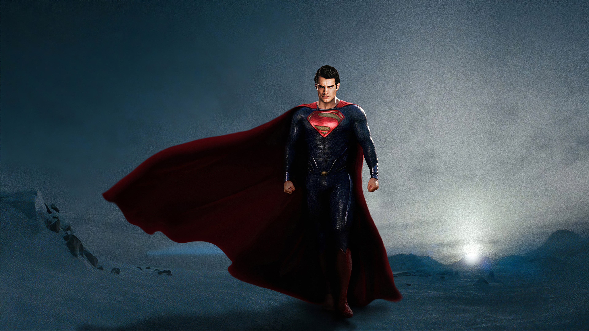

Batman é um herói fictício criado por Bob Kane e Bill Finger, estrelando nas histórias em quadrinhos da DC Comics. Seu verdadeiro nome é Bruce Wayne, um bilionário que, ao testemunhar o assassinato de seus pais ainda criança, jurou combater o crime. Ele não possui superpoderes, mas conta com inteligência, habilidades físicas extremas, tecnologia avançada e uma forte determinação. Batman age principalmente em Gotham City, uma metrópole corrompida e infestada de vilões icônicos como o Coringa e Charada. Ele é conhecido por usar a escuridão e o medo como ferramentas para intimidar criminosos. Ao longo das décadas, sua história foi recontada e reinterpretada em quadrinhos, filmes, séries e animações. Seus aliados incluem figuras como Alfred (seu mordomo e confidente), Robin, Asa Noturna e Mulher-Gato. Apesar de sua justiça implacável, ele se recusa a matar, mantendo um código moral rígido. Batman é mais do que um vigilante: é um símbolo de esperança e resistência contra o caos. Sua lenda inspira milhões de fãs ao redor do mundo, sendo um dos super-heróis mais complexos e queridos da cultura pop.
O Superman é um dos personagens mais icônicos da DC Comics, criado por Jerry Siegel e Joe Shuster em 1938. Seu nome original é Clark Kent, um alienígena vindo do planeta Krypton, salvo ainda bebê e adotado por um casal de fazendeiros no Kansas. Criado com valores humanos, ele usa seus poderes extraordinários para proteger a humanidade como o herói mais poderoso do universo DC. Seus principais poderes incluem força sobre-humana, velocidade, voo, visão de raio-X, invulnerabilidade e sopro congelante. Ele é o símbolo da esperança, representando o ideal de bondade, justiça e altruísmo. Superman enfrenta vilões como Lex Luthor, General Zod e Brainiac, além de lutar contra ameaças que colocam em risco toda a humanidade. Sua identidade secreta como jornalista do Daily Planet permite que ele conviva com os cidadãos comuns enquanto zela por sua segurança. Ele faz parte da Liga da Justiça, grupo que reúne os maiores heróis da Terra. Apesar de seu poder quase ilimitado, ele mantém uma profunda conexão emocional com os seres humanos e a Terra. O Superman é muito mais que um super-herói: é um mito contemporâneo e inspiração global.